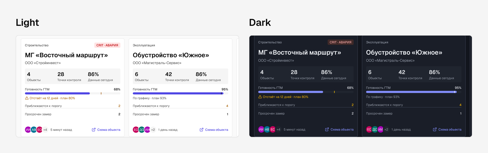
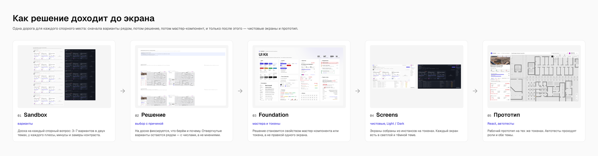
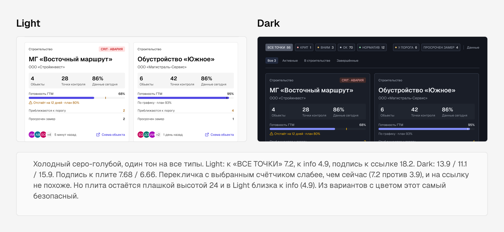

Над экранами работала команда дизайнеров. Поэтому главное, что я строил, — система и процесс, при которых решение принимается один раз и одинаково доходит до каждого экрана в обеих темах.
| 147 | 121 | 149 × 2 |
|---|---|---|
| мастер-компонентов, 889 вариантов в них | семантических цветовых токенов, режимы Light и Dark | чистовых экранов, каждый в светлой и тёмной теме |
Основа
Система построена на shadcn UI Kit, над ним лежит собственный семантический слой ГЕОВИЗОРА. Кит даёт примитивы и палитру, слой ГЕОВИЗОРА — смыслы: surface/panel, status/critical, action/primary, map/wall и так далее. Экраны ссылаются только на смысловые токены.
- Токены: 121 цветовая переменная в группах surface, text, border, action, status, nav, chart, avatar, map, effect
- Типографика: 14 стилей на Geist и Geist Mono — от Display 32 до Mono S 12. Цифры показаний набраны моноширинным
- Иконки: 55 контурных глифов Lucide
- Эффекты: три уровня подъёма — Raised, Floating, Accent

Цвет по смыслу
Все продуктовые решения держатся на одном правиле: у каждого цвета один смысл, и занятый цвет не берут для другого.
| Цвет | Смысл | Где встречается |
|---|---|---|
| Красный | Только авария | Плашка проекта при аварии, точка CRIT, заливка аварии в колоколе, «Просрочена» у задачи |
| Янтарный | Предупреждение, ожидание | Отставание по графику, приближение к порогу, «Ждёт согласования» |
| Синий | Новое, непрочитанное | Точка непрочитанного в ленте, разделитель «Новые» |
| Индиго | Выбор и ссылки | Выбранная строка и карточка, фокус, ссылки, полоса готовности |
| Серый | Количество, нейтральные статусы | Счётчик комментариев, статусы задачи, «Возвращён» |
Исключение одно и записано поимённо: ошибки полей формы остаются красными.
Правило проверяется замером. Для каждого нового цвета считали контраст к фону и различимость ΔE к уже занятым цветам в обеих темах. Цвет, слишком близкий к занятому, в систему не попадает. Поэтому поле деформаций на плане синее и фиолетовое: красный и жёлтый остаются за статусами точек.

Две темы
Тёмная тема включается сменой режима переменных, а не перекраской. Структура светлого и тёмного экрана совпадает один в один, различается только цвет. Контраст проверяли в каждой теме отдельно. Например, растр плана в светлой теме лежит с непрозрачностью 80 %, в тёмной — 36 %, а красный аварии в тёмной теме светлее, чтобы держать контраст к фону.

Принципы интерфейса
- Хром белый, рабочая область чуть темнее. Шапка и навигация отделены от данных без лишних теней
- Не больше двух содержательных панелей рядом
- Колонка заполняет высоту, пока ей есть что показать
- В диалогах нет разделителей — ни под заголовком, ни над кнопками
- Счётчик — чипом, а не текстом в скобках. Красный счётчик значит тревогу, серый — количество
- Нет мёртвых элементов. Всё, что выглядит нажимаемым, работает, спрятано или честно говорит «раздел в разработке»
- Выбор доводит прокрутку до выбранного
Процесс команды
Три страницы Figma — три стадии зрелости решения:
- Sandbox — доски вариантов. Спорный вопрос разбирается как 3–7 вариантов в обеих темах, у каждого подписаны принцип, плюсы, минусы и замеры. Всего 49 досок, около 33 из них сравнивают варианты
- Foundation — токены, мастер-компоненты и эталоны паттернов
- Screens — только чистовые экраны из мастеров и токенов, без «сырых» значений

Путь одного решения
- Вопрос. Замечание стейкхолдера, дефект с ревью или пробел во флоу
- Доска вариантов. Варианты рисуются на клонах реальных экранов с реальными данными: самая длинная причина тревоги, счётчик «128», окно 1280
- Решение — вместе с причиной. Замечание к варианту не считается выбором: сначала правится доска
- Мастер. Изменение попадает в компонент или токен, а не в отдельный экран
- Раскатка по всем местам, где встречается приём, в обеих темах, и сверка: вне изменённых узлов ничего не сдвинулось
- Рабочий прототип. То же решение в браузере, где флоу проходится по-настоящему, с логином и ролью

Ревью по контракту
У дизайн-системы есть письменный контракт: экран собирается из мастеров, цвет берётся из семантического токена, тень — из стиля, отступления перечислены поимённо. На ревью я проверял экран по контракту, а не на вкус: сколько узлов без привязки к токенам, совпадает ли тёмный экран со светлым, не появился ли цвет, у которого в системе другой смысл.
Что я вынес: команде нужны правила, а не образцы. Образец копируют вместе с ошибками, а правило с причиной переносится на новый экран без меня.